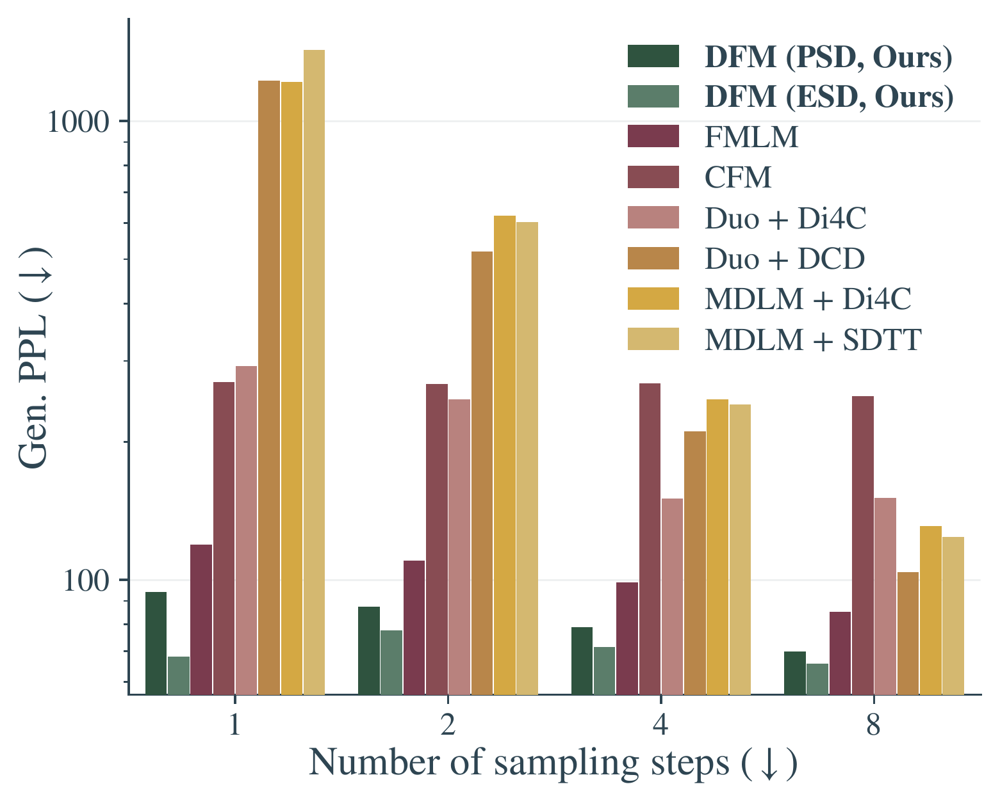

A framework for trajectory compression on the probability simplex
Abstract. The sequential nature of autoregressive next-token prediction imposes a fundamental speed limit on Large Language Models. While continuous flow models offer a path to parallel generation, they traditionally demand expensive iterative integration. Flow Maps bypass this bottleneck by compressing generative trajectories into single-step mappings—theoretically enabling the generation of full text sequences from noise in a single forward pass. However, standard formulations rely on Euclidean regression losses that are geometrically ill-suited for discrete data. In this work, we resolve this conflict with Discrete Flow Maps, a framework that reconciles trajectory compression with the geometry of the probability simplex. We recast standard flow map training for the discrete domain, aligning the training dynamics with the discrete nature of language.

Few-step generation perplexity on LM1B
Autoregressive models generate text one token at a time. This sequential bottleneck is fundamental—no matter how fast the hardware, you still pay a cost proportional to sequence length. Flow and diffusion models sidestep this by drawing many tokens at once, but they require solving an ODE at inference, which means many sequential network evaluations of its own.
Flow maps cut through both problems: they learn to jump directly from noise to data in a single forward pass, compressing the entire ODE trajectory into one step. The catch? Standard flow map training uses \(L^2\) regression—but text lives on the probability simplex, not in Euclidean space. Treating a probability distribution like a coordinate in \(\mathbb{R}^K\) is a geometric mismatch.
Discrete Flow Maps fix this by reparameterizing the flow map through the mean denoiser—an object that natively lives on the simplex. The network outputs are probability distributions, the targets are probability distributions, and every loss becomes a KL divergence or cross-entropy. The mathematical scaffolding for this is what follows.
The context we need going forward is measure transport: a map that takes every sample from one distribution and sends it to a sample from another. Given a base distribution \(\rho_0\) and a target \(\rho_1\), we want a map \(T\) so that \(T_\sharp \rho_0 = \rho_1\)—draw \(x_0 \sim \rho_0\), return \(T(x_0) = x_1\), and the collection of outputs has distribution \(\rho_1\).
Sample-by-sample correspondence under the pushforward \(T_\sharp \rho_0 = \rho_1\).
A particularly effective way to build this map is to make the connection dynamic: instead of one big jump, lay down a continuous sequence of measures \(\rho_t\) for \(t \in [0,1]\) that bridges \(\rho_0\) to \(\rho_1\). At the level of an individual sample, a velocity field \(b_t\) tells it where to go next via the probability flow ODE:
\[\dot x_t = b_t(x_t), \qquad x_0 \sim \rho_0,\]
which guides the instantaneous change of \(x_0\) to any \(x_t\). Mass is locally conserved—the path of densities satisfies the continuity equation \(\partial_t \rho_t + \nabla \cdot (\rho_t\, b_t) = 0\), which just says that mass is being shoved around by the velocity without being created or destroyed.
The main learning problem is: how do we specify a \(\rho_t\) that connects the two distributions, and then learn the velocity field with a neural network?
Take the total derivative of \(\rho_t\) along \(X_t\) via the chain rule:
\[\frac{d}{dt}\rho_t(X_t(x)) = \partial_t \rho_t(X_t(x)) + \nabla \rho_t(X_t(x)) \cdot \dot X_t(x).\]
Expanding the divergence in the continuity equation and choosing \(\dot X_t = b_t(X_t)\), the terms cancel, leaving:
\[\frac{d}{dt}\rho_t(X_t(x)) = -\rho_t(X_t(x))\,\nabla \cdot b_t(X_t(x)).\]
Integrating this ODE gives the density along trajectories:
\[\rho_t(X_t(x)) = \rho_0(x)\,\exp\!\left(-\int_0^t \nabla \cdot b_s(X_s(x))\,ds\right).\]
A particle riding the velocity field along its characteristic curve from \(\rho_0\) to \(\rho_1\).
There is a pretty straightforward way to do this. Imagine randomly drawing pairs \((x_0, x_1) \sim \rho_0 \times \rho_1\) and connecting each pair by a straight line—a stochastic interpolant:
\[I_t = (1-t)\,x_0 + t\,x_1.\]
If you keep drawing pairs and constructing \(I_t\), the cloud of points at any time \(t\) defines a density \(\rho_t\). Now, if you want the velocity field that traverses this path of measures, you can intuit it as follows: pick a point \(x\) at time \(t\), look at all the interpolant lines that pass through it, and average their slopes. That average is the velocity:
\[b_t(x) = \mathbb{E}[\dot I_t \mid I_t = x],\]
which we learn by regressing a network \(\hat b_t(x)\) against \(\dot I_t\) on samples—the flow matching objective. Inference is then ODE integration of \(\dot x = b_t(x)\) with many network evaluations.
The flow matching loss is least-squares regression of \(\dot I_t\) onto functions of \(I_t\):
\[b_t = \operatorname*{arg\,min}_{\hat b_t} \int_0^1 \mathbb{E}\,\bigl|\hat b_t(I_t) - \dot I_t\bigr|^2\,dt.\]
The least-squares predictor of any random variable \(Y\) from observation \(X\) is the conditional expectation \(\mathbb{E}[Y \mid X]\)—this is the regression-function characterization (Hilbert projection in \(L^2\)). So \(b_t(x) = \mathbb{E}[\dot I_t \mid I_t = x]\).
Pairs \((x_0, x_1)\) connected by lines \(I_t\). The amber lines condition on \(I_t = x\); their slopes average to \(b_t(x)\).
Instead of having to solve the ODE, it would be nice to directly output what the solution would be at any time \(t\). That is exactly what the flow map \(X_{s,t}(x)\) does—it is the solution operator that jumps directly from time \(s\) to time \(t\) along the integral curve. You can think of it as an arbitrary-step integrator with step size \(|t - s|\). In particular, \(X_{0,1}(x_0) = x_1\) produces a sample from \(\rho_1\) in one step.
If we can write down the equations that \(X_{s,t}\) must satisfy to uniquely be the solution operator of the ODE, then enforcing those equations gives us a mechanism for learning it directly. There are three such identities, and they are not independent—each implies the others given \(X_{s,s}(x) = x\)—so enforcing any one is sufficient:
Semigroup: \(X_{s,t}(x) = X_{u,t}(X_{s,u}(x))\)
Lagrangian: \(\partial_t X_{s,t}(x) = b_t(X_{s,t}(x))\)
Eulerian: \(\partial_s X_{s,t}(x) + b_s(x) \cdot \nabla_x X_{s,t}(x) = 0\)
The natural parameterization writes the flow map as a displacement by an average velocity: \(X_{s,t}(x) = x + (t-s)\,v_{s,t}(x)\). No ODE solve appears in the loss—the network is supervised purely by the algebraic structure any flow map must obey. We next move to the simplex, where these identities take a particularly clean form.
The flow map \(X_{s,t}\) jumps along the integral curve. The semigroup identity: the two-hop \(x_s \to x_u \to x_t\) equals the direct hop.
Consider a vocabulary of \(K\) tokens—for instance, three words: fox, dog, and cat.
Each token is represented as a one-hot vector \(e_i \in \mathbb{R}^K\), forming the vertices of the \((K{-}1)\)-dimensional probability simplex \(\Delta^{K-1}\).
Any probability distribution over the vocabulary is a point inside the simplex. The closer a point is to a vertex, the higher the probability assigned to that token.
The simplex is defined as:
\[\Delta^{K-1} = \{x \in \mathbb{R}^K : x \geq 0,\; \langle \mathbf{1}, x \rangle = 1\}\]
To generate discrete data we want an ODE
\[\dot x_s = b_s(x_s), \qquad x_0 \sim \rho_0,\]
that transports a continuous base distribution \(\rho_0\) in \(\mathbb{R}^K\) to the discrete target \(\rho_1\) supported on the simplex vertices. How do we learn the velocity field \(b_s\)?
We need training pairs that tell us where the flow should go at each time. The stochastic interpolant provides exactly this: given a base sample \(I_0 \sim \rho_0\) and a data token \(I_1 \in \{e_1, \dots, e_K\}\) drawn from \(\rho_1\), it defines a straight-line path between them:
\[I_t = (1 - t)\, I_0 + t\, I_1, \qquad t \in [0, 1].\]
Each base–data pair \((I_0, I_1)\) traces a straight line from the base distribution toward a simplex vertex. The interpolant \(I_t\) slides along this line as \(t\) increases. At \(t{=}0\) we recover the base; at \(t{=}1\) we arrive at a one-hot vertex. At any intermediate time the population of \(I_t\) points forms a cloud that smoothly evolves from continuous to discrete.
The interpolant tells us the desired direction at every point. Each interpolant has slope \(\dot{I}_s = I_1 - I_0\). But many interpolants pass through any fixed point \(x_s\). The right velocity field averages over all of them:
\[b_s(x_s) = \mathbb{E}[\dot{I}_s \mid I_s = x_s].\]
The average-velocity parameterization is fine in \(\mathbb{R}^d\), but \(v_{s,t}\) is a direction, not a probability distribution, so it can’t be trained with cross-entropy. When \(x_1\) is one-hot there is a tighter object: the instantaneous denoiser—the conditional expectation of the clean data given the noisy observation:
\[\begin{aligned}\psi_{s,s}(x_s) &= \mathbb{E}[I_1 \mid I_s = x_s] \\ &= \sum_{i=1}^{K} \underbrace{\mathbb{P}(I_1 = e_i \mid I_s = x_s)}_{p_i}\, e_i.\end{aligned}\]
Because \(\psi_{s,s}\) is a convex combination of vertices, it always lives on the simplex. The velocity field and denoiser are tied algebraically:
\[b_s(x_s) = \frac{\psi_{s,s}(x_s) - x_s}{1 - s}\]
Geometrically: at a fixed point \(x_s\), many interpolant lines pass through—one per pair \((x_0, x_1)\). Each has slope aimed at its own vertex. The velocity \(b_s(x_s)\) is the conditional average of those slopes, and that average points directly at \(\psi_{s,s}\)—the probability-weighted centre of the vertices. Following the velocity forward by exactly \(1-s\) lands you on the simplex.
Since the weights \(p_i\) are non-negative and sum to one, \(\psi_{s,s}\) is a convex combination of vertices and therefore always a valid probability distribution on the simplex. This geometric fact means we can learn the instantaneous denoiser with a cross-entropy loss:
\[\psi_{s,s} = \argmin_{\hat \psi_{s,s}}\mathbb{E}\left[ -\sum_{k=1}^K I_1^{(k)} \log \hat{\psi}_{s,s}^{(k)}(I_s) \right].\]
Consider two points along the ODE trajectory: an earlier time \(x_s\) and a later time \(x_t\). We already know the tangent at \(x_s\) projects onto the simplex at the instantaneous denoiser \(\psi_{s,s}\). What about the secant from \(x_s\) to \(x_t\)?
As we integrate along the trajectory from \(s\) to \(t\), we define the mean denoiser \(\psi_{s,t}\)—a time-weighted average of the instantaneous denoisers along the path:
\[\psi_{s,t}(x_s) = \int_s^t w(u)\,\underbrace{\mathbb{E}[I_1 \mid I_u = x_u]}_{\psi_{u,u}(x_u)}\, du\]
Since each \(\mathbb{E}[I_1 \mid I_u = x_u]\) is on the simplex and \(w(u)\) is a non-negative weight function that integrates to 1 over \([s,t]\), the mean denoiser is a convex combination of simplex points—so \(\psi_{s,t}(x_s) \in \Delta^{K-1}\) also lives on the simplex.
Geometrically, just as the tangent at \(x_s\) projects to the instantaneous denoiser \(\psi_{s,s}\), the secant from \(x_s\) to \(x_t\) projects to the mean denoiser \(\psi_{s,t}\) on the simplex.
The flow map \(X_{s,t}\) jumps directly from time \(s\) to time \(t\) along the ODE trajectory \((x_u)_{u \in [0,1]}\). Since the true flow map is a convex combination of the current state and the mean denoiser:
\[X_{s,t}(x_s) = \tfrac{1-t}{1-s}\,x_s + \tfrac{t-s}{1-s}\,\psi_{s,t}(x_s),\]
we parameterize our map \(\hat X_{s,t}\) in terms of a neural network \(\hat \psi_{s,t} \in \Delta^{K-1}\) in the same way.
At \(t = 1\), the map reduces to the mean denoiser itself: \(X_{s,1}(x_s) = \psi_{s,1}(x_s)\).
As \(x_t\) evolves along the trajectory, the mean denoiser \(\psi_{s,t}(x_s)\) tracks it like a shadow cast onto the simplex—always inside the triangle.
The flow map need not lie on the simplex, but the mean denoiser is always a valid probability distribution—so we can train it with KL divergence losses, respecting the geometry of the simplex. We next describe four self-consistency conditions that provide training targets for \(\psi_{s,t}\).
The flow map must satisfy the semi-group property: jumping from \(s\) to \(t\) must equal jumping from \(s\) to \(u\), then from \(u\) to \(t\).
This is equivalent to requiring the following convex decomposition of the mean denoiser:
\[\psi_{s,t}(x_s) = \alpha_{s,u,t}\,\psi_{s,u}(x_s) + (1-\alpha_{s,u,t})\,\psi_{u,t}(X_{s,u}(x_s)),\] where \(\alpha_{s,u,t} \in [0,1]\) is a time-dependent weight.
Since both sides of the above equation are probability distributions (the right-side is a convex combination of points on the simplex), we can enforce this identity via KL divergence rather than L\(^2\) regression:
\[\mathcal{L}_{\text{PSD}} = \mathbb{E}\Big[D_{\text{KL}}\big(\text{sg}[\alpha\,\hat\psi_{s,u} + (1-\alpha)\,\hat\psi_{u,t}(\hat X_{s,u})]\;\|\;\hat\psi_{s,t}\big)\Big].\]
The Lagrangian perspective requires that the flow endpoint velocity \(\partial_t X_{s,t}(x_s)\) matches the instantaneous drift \(b_t(x_t)\). In terms of the mean denoiser, this is equivalent to:
\[\psi_{s,t}(x_s) = \psi_{t,t}(x_t) - C_{s,t}\,\tfrac{\partial}{\partial t}\psi_{s,t}(x_s)\]
This means the tangent to the curve \(\psi_{s,t}(x_s)\) is always parallel to the direction \(\psi_{t,t}(x_t) - \psi_{s,t}(x_s)\).
The right-side of the above equation need not be a probability distribution when parametrized by arbitrary neural networks. To obtain a valid target distribution, we derive an equivalent condition in logit space:
\[\psi_{s,t} = \text{Softmax}\!\big(z_{t,t}(x_t) - \log(\mathbf{1} + C_{s,t}(\dot z_{s,t} - \bar{\dot z}_{s,t}\mathbf{1}))\big).\]
This logit-space formulation always yields a valid probability distribution, enabling KL divergence training.
The Eulerian perspective enforces that the flow map is invariant to the source time \(\partial_s (X_{s,t}(x_s)) = 0\). In terms of the mean denoiser, this is equivalent to:
\[\frac{\partial}{\partial s}(\psi_{s,t}(x_s)) = \kappa_{s,t}\big(\psi_{s,t}(x_s) - \psi_{s,s}(x_s)\big),\]
where \(\kappa_{s,t}\) is a time-dependent scalar.
Again, we derive an equivalent logit-space condition:
\[\psi_{s,t} = \text{Softmax} \big(z_{s,s}(x) - \log(\mathbf{1} - \kappa_{s,t}^{-1}(D_s z_{s,t} - \overline{D}_s z_{s,t}\,\mathbf{1}))\big),\]
which always yields a valid probability distribution for KL training.
Taking the derivative of the semi-group condition with respect to the intermediate time \(u\) yields a fourth identity:
\[\frac{d}{du}\big[\alpha_{s,u,t}\,\psi_{s,u}(x) + (1-\alpha_{s,u,t})\,\psi_{u,t}(X_{s,u}(x))\big] = 0.\]
Setting \(u = s\) recovers ESD; setting \(u = t\) recovers LSD. This unifies the previous differential consistency rules as special cases of one differential identity.
All four consistency losses—PSD, LSD, ESD, and dPSD—are exact objectives derived directly from the geometric definitions of the flow, with no approximations.
Minimizing any of these losses with the diagonal cross-entropy loss, ensures the learned flow map \(\hat X_{s,t}\) matches the true flow map \(X_{s,t}\) and therefore generates the correct data distribution at \(t=1\).
Unlike autoregressive models that generate one token at a time, discrete flow maps operate on all \(L\) token positions simultaneously.
Each position has its own simplex. The flow map transports noise to data across all positions in parallel, enabling generation of an entire sequence in a single forward pass.
The flows from Gaussian noise converge to simplex vertices—each vertex representing a token in the vocabulary. The full sequence emerges simultaneously rather than sequentially.
A pre-trained discrete flow map may not satisfy downstream objectives out of the box. For instance, a base model might produce an incorrect arithmetic result.
The base (green) dynamics land on tokens that form a plausible but wrong answer.
Fine-tuning steers the flow map dynamics toward a reward signal. The adapted (red) trajectories are nudged so that the landing tokens produce the correct answer.
Because each position is independent, steering respects the parallel structure—all positions are corrected simultaneously.
We evaluate DFMs on One Billion Word (LM1B) and OpenWebText (OWT), comparing against recent accelerated discrete diffusion baselines. DFMs substantially outperform all baselines in the few-step regime.
Generative perplexity (↓) and entropy (↑) across NFEs for LM1B and OWT.
| Dataset | Method | Metric | 1 | 2 | 4 |
|---|---|---|---|---|---|
| LM1B | Duo + DCD | PPL | 1224.52 | 520.08 | 210.88 |
| Ent. | 4.33 | 4.20 | 4.23 | ||
| Duo + Di4C | PPL | 292.94 | 247.69 | 150.67 | |
| Ent. | 3.79 | 3.87 | 4.00 | ||
| MDLM + SDTT | PPL | 1429.48 | 602.14 | 241.01 | |
| Ent. | 4.31 | 4.28 | 4.28 | ||
| MDLM + Di4C | PPL | 1217.10 | 621.59 | 247.32 | |
| Ent. | 4.38 | 4.37 | 4.00 | ||
| CFM | PPL | 269.72 | 267.39 | 267.97 | |
| Ent. | 3.10 | 3.15 | 3.28 | ||
| FMLM | PPL | 119.34 | 110.19 | 98.76 | |
| Ent. | 4.16 | 4.21 | 4.21 | ||
| DFM (PSD) | PPL | 94.08 | 87.42 | 78.89 | |
| Ent. | 4.06 | 4.08 | 4.10 | ||
| DFM (ESD) | PPL | 68.11 | 77.60 | 71.53 | |
| Ent. | 3.79 | 4.11 | 4.13 | ||
| OWT | Duo + DCD | PPL | 5743.29 | 891.16 | 250.86 |
| Ent. | 6.02 | 5.41 | 5.37 | ||
| Duo + Di4C | PPL | 370.51 | 210.22 | 154.67 | |
| Ent. | 3.92 | 4.63 | 4.85 | ||
| MDLM + SDTT | PPL | 1260.86 | 877.22 | 339.73 | |
| Ent. | 5.26 | 5.34 | 5.38 | ||
| MDLM + Di4C | PPL | 1298.80 | 758.23 | 239.27 | |
| Ent. | 5.29 | 5.35 | 5.40 | ||
| FMLM | PPL | 168.30 | 133.29 | 111.31 | |
| Ent. | 5.17 | 5.25 | 5.26 | ||
| DFM (PSD) | PPL | 180.29 | 152.83 | 122.32 | |
| Ent. | 4.91 | 5.03 | 5.10 | ||
| DFM (ESD) | PPL | 5.33 | 108.91 | 77.08 | |
| Ent. | 0.26 | 5.15 | 5.27 |
Generative perplexity (↓) and entropy (↑) across NFEs.
| Dataset | Stage | 1 | 2 | 4 | 8 | 16 | 128 | 256 | 1024 |
|---|---|---|---|---|---|---|---|---|---|
| LM1B | Diagonal | 2.05 | 69.59 | 204.13 | 124.64 | 101.89 | 75.82 | 72.75 | 68.33 |
| 0.76 | 2.87 | 4.37 | 4.32 | 4.27 | 4.19 | 4.17 | 4.16 | ||
| + PSD | 94.08 | 87.42 | 78.89 | 69.90 | 64.90 | 58.38 | 56.59 | 56.31 | |
| 4.06 | 4.08 | 4.10 | 4.10 | 4.11 | 4.10 | 4.10 | 4.11 | ||
| + ESD | 68.11 | 77.60 | 71.53 | 65.61 | 59.92 | 55.70 | 56.88 | 58.27 | |
| 3.79 | 4.11 | 4.13 | 4.13 | 4.13 | 4.11 | 4.12 | 4.12 | ||
| OWT | Diagonal | 29.79 | 9.90 | 56.03 | 180.79 | 122.20 | 61.92 | 55.63 | 47.07 |
| 1.55 | 0.91 | 2.84 | 5.20 | 5.52 | 5.28 | 5.22 | 5.12 | ||
| + PSD | 180.29 | 152.83 | 122.32 | 98.54 | 82.51 | 56.00 | 51.81 | 47.82 | |
| 4.91 | 5.03 | 5.10 | 5.11 | 5.09 | 5.00 | 4.97 | 4.97 | ||
| + ESD | 5.33 | 108.91 | 77.08 | 62.98 | 55.03 | 41.90 | 39.08 | 36.48 | |
| 0.26 | 5.15 | 5.27 | 5.23 | 5.18 | 5.04 | 5.00 | 4.95 |
Gen. PPL (↓) and entropy (↑) across CFG scales ω. Samples generated in four blocks of 256 tokens, each with 1024 steps.
| ω | Gen. PPL ↓ | Entropy |
|---|---|---|
| 0.0 | 56.31 | 5.20 |
| 0.5 | 46.78 | 5.06 |
| 1.0 | 36.44 | 4.94 |
| 1.5 | 33.22 | 4.87 |
| 2.0 | 30.98 | 4.81 |
[CLS] at the time they said they were the foundation for enough children for the missing school. [CLS] the only news is, despite the fact that i still not be seen enough. [CLS] " at the same time, the club is often a smallon, but i am m going to have to [CLS] we give our back to our country. [CLS] an he said he ' s now home.
[CLS] what to do they said they want that is for to children for the afghan people. [CLS] the only news is, though the fact that a still not was seen enough. [CLS] " at the same time, the weekend is a comhenon, but in that is a major from across on a continent and in the whole country.
[CLS] at the time they said they were not caring for enough children for the public school. [CLS] the only news is, despite the fact that i still not be seen enough. [CLS] " at the same time, the economy is getting a smallon, but i ' m going to have to on a plane and back to this country. [CLS] but he said he ' s returning home.
[CLS] at the time they said they were the foundation for enough children for the haitian people. [CLS] the only news is, despite the fact that i still not be seen enough. [CLS] " at the same time, the economy is often a smallon, but i ' m going to have gone on and give and back to this country. [CLS] and he said he ' s now home.